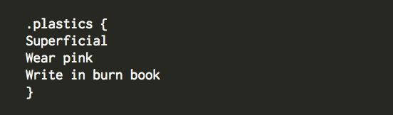

It's week-2 at Dev Bootcamp and we're diving head first into HTML and CSS. If you aren't familiar, HTML and CSS are source code that work in conjunction to develop and design websites. One is responsible for the nuts and bolts of a web site, HTML, and the other is used to style those nuts and bolts, CSS.
I've had the pleasure of working with HTML prior to this week, but CSS was brannnnnnd new to me. While there was a lot to learn, I was able to find some good materials that offered some well-written, detailed explanations--shout out to Code Academy and Reddit University! This is an attempt to make a contribution of my own, one that focuses on ids and classes.
Ids and classes can be easy to mix-up or misinterpret. In order to better understand their distinctions and clarify their best use, we're going to take a trip back to high school. Specifically, North Shore High from the movie Mean Girls.
Caty Heron isn't sure what to make of the student population when she first arrives at North Shore High. To fill her in, her classmate Janis whittles the student body down into different social circles and describes the characteristics they possess.

Similarly in CSS, one element, or student, may have the same characteristics, or style, as another student. A consolidated way to give these elements the same characteristics in HTML is to assign them a class in CSS.
Let’s say our elements are three different students, student's we’d classify as plastics. In HTML we’d write:

Now that Regina, Gretchen and Karen are all classified as plastics in HTML, we use CSS to give the plastics universal characteristics. They're called styles.

Notice the period before the element plastics. The period is what tells CSS that “plastics” is a class. CSS would not be able to distinguish word “plastics” as a class without the period.
A different, and more specific, type of identifier is an id. The id is used in situations where the identifier is a unique individual, so unique that there is none other like it in the entire HTML document. Kind of like in the movie Mean Girls, there is only one protagonist. If there were two Caty Heron's in the movie, it simply wouldn't work. Just like in HTML, only one id is allowed. To id the element protagonist in HTML it'd look like:
Then we go to CSS to style the protagonist id Caty Heron.

Notice the id name is prefaced by a #. Remember the period that must preface a class? The # does the same job as the preiod; it tells CSS that Caty Heron is the id.
So there you have it, not too tricky once you take a closer look! Also wayyyy less complicated than high school. Cheers!
Take Me to The Kitchen
January, 18th 2015
There are two areas of the restaurant: the dining room and the kitchen. The dining room is where people view the menu, make their order and prepare to experience their meal. They may complain to the waiter if their food is cold. They might fuss if they wait too long for the bill. It’s an enviroment for the consumer mindset.
The kitchen, on the other hand, is a big mess. Everyone is moving quickly, focusing on their work. It’s more of a, “outta my way!” type of environment. Everyone is jumping in and getting started. Dev Bootcamp is the kitchen.
Prior to starting phase zero, my impression of DBC was that it seems like an intense, fast-paced environment. In addtion to programming knowledge, DBC promotes vulnerable and open learning. To put it in simpler terms for my family and other “non-technical’ people, I like to use a construction metaphor.
“Pretend I’m taking a course to build a house in a very short amount of time,” I say. “Imagine learning all those skills very quickly; skills like how to reading blueprints, designing a sky light or using a nail gun. I'm setting out to acquire all those skills, in a short period of time, and then build my own house. That new house will be my resume."
My expectations remain the same after seeing the video. I’d be lying if I said I wasn’t nervous, because I definitely am. Beyond feeling nervous, I think the strongest emotion is that I know what I’m in for: DBC will be fast-paced. I'll have to be vulnerable and expose my weaknesses, and a lot of my ignorance, to my cohort. Most importantly, it's me to get the work done and acquire the skills I need to build my dream house. I’m ready!
Getting Aquainted with Git
January 16th, 2015

Like how the 'save' function saves work in Micrsoft Word, version control records changes to protect work. Version control also allows developers to take detailed snapshots of their projects so they may go back and review their progress.
Version control systems are used to give people, often in different locations, access to the same project. Similiar to Dropbox, version control systems digitally store projects and allow people to edit these projects from any computer.
If Dropbox is the 'hub' where multiple people can access the same information, Git is your personal computer server. When you are ready to share those changes with the 'hub,' you can 'commit,' or save those changes, then 'push' those changes to the 'hub,' also known as GitHub.
Once the changes are pushed to GitHub, your larger network has access to your work. In a team environment, people can continously 'commit,'save, work to Git on their personal computer and then 'push,' share, that work with GitHub for collaborations. Adding, pushing and committing all happens in real-time, giving you the option to instantly share or access work in GitHub. As a result, multiple people can work of off the most up-to-date version of a project without disrupting eachother's work.